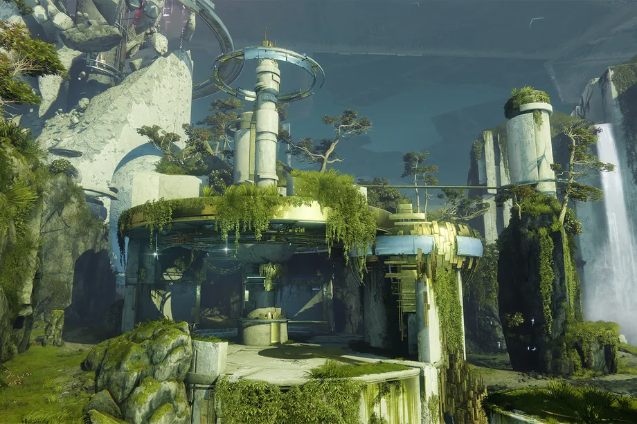
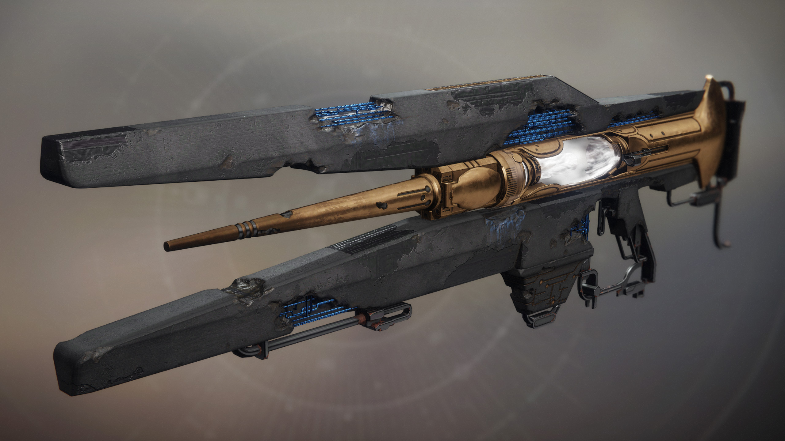

What is the Shadowkeep DLC?
*The Shawdowkeep DLC is the fourth exapnsion pack. This setting behind this expansion pack is a scary hive and goblin scene. The enemies here are based on the idea of hive and the vex. The DLC features a new raid, pve mode, updates to pvp, and much more. As per usual, take a look at the content below and enjoy!
- * Raids and PVE:
- There is a new raid called: "Garden Of Salvation". GOS features a challenge mode and easy mode. Both modes, have the guardians go through multiple counters.
The encounters vary from tethering a light, protecting polls, and deafting a boss. When defeating the boss, you may pick up some orbs from deafting eneimes, this
is used as a timer for boss damage. Furthermore, we are also introduced to a new dungeon called the "Pit Of Heresey."Dungeons are like mini raids, but again, are
easier and only require three people. The raid makes you fight the vex, where the dungeon makes you fight the hive.

- * Crucible:
- The Crucible has lot's of fun with the new DLC. For starters, there a lot's of bug fixes and nerfs that have been done on the weapons. Furthermore, there are
new maps to play on. One map that comes to mind is the garden of salvation map. This map is very similar to the raid and has gaurdians fight
in game modes from clash, rumble, and elimination!
 - * Weapons and others:
- With the new DLC, there are new weapons we can use to play around with. One weapon is the Divinity: Trace Rifle. This is a trace rile
that can be obtained from a exotic quest. The exotic perk here is that it can boost damage for your fireteam.
